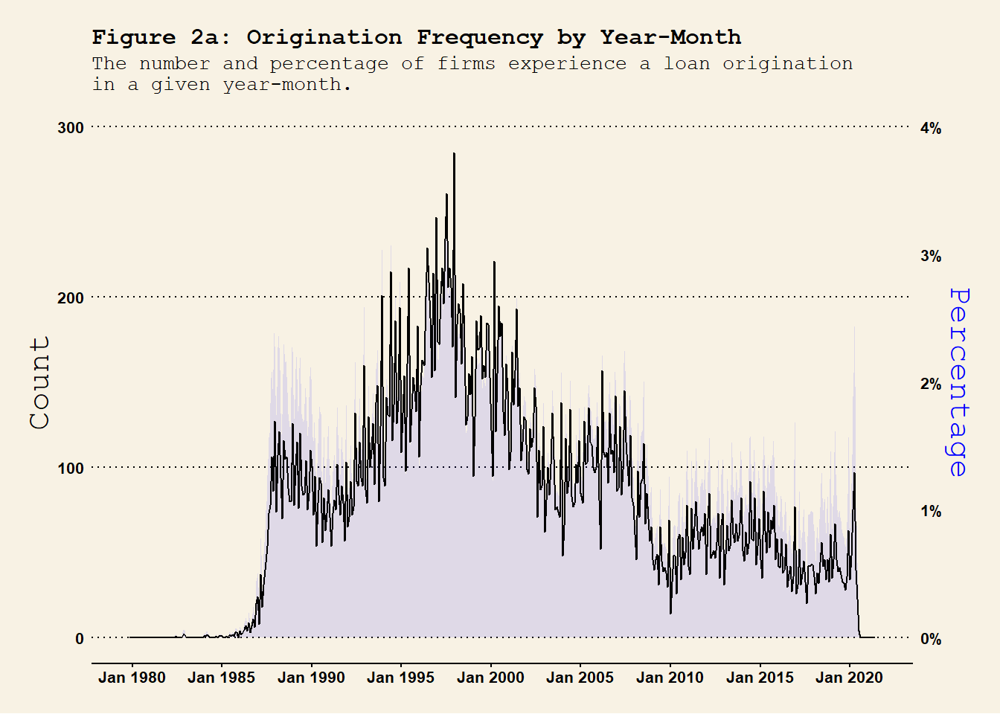

This file follows file “DealScan_Loan_Path2.html” and file “DealScan_Loan_Path2.qmd” in folder “DealScan_Loan_Path_Jun2024”. The aim of this file is to merge the cleaned firm-deal-time DealScan loan data with the Compustat dataset and connect the changes in the firm fundamental to the firm’s loan renegotiation activities. The next step is to classify the detailed terms that are renegotiated.
S2. Compustat & DealScan Merged Datasets
Import and Compustat Data and cleaned DealScan dataset and merge the two into a richer dataset.
Show the code
# load("DealScan_link_table.RData")# Compustat <- as_tibble(read.csv("squssgfwvimw81ul.csv"))# save(Compustat, file = "Compustat.RData")load("DealScan_uniborrow_public_cleaned.RData") load("Compustat.RData") names(Compustat) Compustat <- Compustat %>%filter(gvkey %in%unique(dt.DealScan_uniborrow_public$gvkey)) %>%mutate(YM =as.yearmon(as.Date(datadate)), YM_lower = YM -1/6# the starting YM of its fiscal quarter )# save(Compustat, file = "Compustat_filter.RData")# # load("Compustat_filter.RData")# templocation <- "/scratch/nhh"## obtain the quarterly merged file: by_quarter <-join_by( gvkey,between(y$Tranche_Active_YM, x$YM_lower, x$YM) # I want the `YM - 1/4 <= Tranche_Active_YM <= YM` )dt.Compustat_DealScan_quarter <- Compustat %>%left_join(y = dt.DealScan_uniborrow_public, by = by_quarter )save(dt.Compustat_DealScan_quarter, file ="Compustat_DealScan_quarter.RData")## obtain the monthly merged file: Compustat_monthly <-rbind.data.frame( Compustat,mutate(Compustat, YM = YM -1/12),mutate(Compustat, YM = YM -2/12))saveRDS(object = Compustat_monthly, file ="Compustat_monthly.rds", compress = T)Compustat_monthly <-readRDS("Compustat_monthly.rds")names(dt.DealScan_uniborrow_public)Compustat_monthly <- Compustat_monthly %>%select(-c(fyearq, fqtr, fyr, indfmt, consol, popsrc, datafmt, datacqtr, datafqtr) ) %>%filter(YM <2021.5)dt.Compustat_DealScan <- Compustat_monthly %>%left_join(dt.DealScan_uniborrow_public, by =join_by( gvkey == gvkey, YM == Tranche_Active_YM ) ) %>%mutate(flag_Renegotiated =replace_na(flag_Renegotiated, replace =FALSE)) %>%mutate(flag_Origination = (!is.na(flag_renegotiation) & (flag_Renegotiated ==FALSE)) )save(dt.Compustat_DealScan, file ="Compustat_DealScan.RData")# saveRDS(object = dt.Compustat_DealScan, file = "Compustat_DealScan.rds")
Warning 1: Merge Compustat and DealScan
Compustat dataset contains filing revision or modification for the same reporting period. This cause the issue of the many-to-one relationship in creating the dt.Compustat_DealScan dataset. E.g. For AMGEN INC (gvkey == 1602), its quarterly filing for the period ended in datadate = 1991-03-31, there are multiple quarter earnings reporting date rdq == 1991-07-18 & 1991-05-01. This cause the issue of many-to-one matching.
The good news is that such observations are not very common, only 22 observations using the code below:
The dt.DealScan_uniborrow_public data from file DealScan_uniborrow_public_cleaned.RData contains firm-loan-tranche-time level observations for US public firms. Therefore, the one-to-many relationship in constructing data dt.DealScan_uniborrow_public in @compustat_dealscan_merged is expected. - Variable obs_id is used as the unique identifier in the database for each observation. - Variable deal_time_id is the unique identifier for firm-deal-time observations. - Variable gvkey_group1 is the unique firm identifier and gvkey is used to match Compustat dataset. - Variable Tranche_Active_YM is constructed from Tranche_Active_Date to match the imputed
Meanwhile, I create a new dataset called dt.Compustat_DealScan_quarter (datafile Compustat_DealScan_quarter.RData) to match renegotiations to the quarterly Compustat file.
s2.1. Loan Renegotiations Summary
The newly merged monthly dataset is named dt.Compustat_DealScan and we will look into each deal.
Show the code
if (!exists("dt.Compustat_DealScan")) {load("Compustat_DealScan.RData") }if (!exists("dt.Compustat_DealScan_quarter")) {load("Compustat_DealScan_quarter.RData") }## year-month level renegotiations frequency dt.Compustat_DealScan %>%group_by(YM) %>%summarise(n_Rng =sum(flag_Renegotiated), # number of renegotiationsn_Orig =sum(flag_Origination), # number of originationsn =n() ) %>%ungroup() %>%mutate(per_Rng = n_Rng / n, per_Orig = n_Orig / n ) %>%ggplot(., aes(x = YM)) +geom_area(aes(y = per_Rng *100^2/2), fill ="red", alpha =0.1 ) +geom_line(aes(y = n_Rng), col ="black" ) +labs(title ="Figure 1a: Renegotiation Frequency by Year-Month", subtitle ="The number and percentage of firms experience a loan renegotiation\nin a given year-month." , x ="" ) +scale_x_yearmon(format ="%b %Y", n =10) +scale_y_continuous(name ="Count", limits =c(0, 400), sec.axis =sec_axis(~. *2/100^2 , name ="Percentage",labels = scales::percent_format(scale =100)) # Format as percentages) ) +theme_wsj(base_size =8) +# theme_linedraw() + theme(axis.title.y.left =element_text(color ="black"),axis.title.y.right =element_text(color ="red"),axis.text.x =element_text(angle =0, hjust =0.5), plot.title =element_text(size =12), plot.subtitle =element_text(size =10) ) #<span style='color:red;'>year-month</span>## year-quarter level renegotiations frequency dt.Compustat_DealScan %>%mutate(YQ =as.yearqtr(YM)) %>%group_by(gvkey, YQ) %>%# group at the firm-YQ level summarise(firm_YQ_Renegotiated =sum(flag_Renegotiated) # check whether a firm experiences a renegotiation in YQ. ) %>%group_by(YQ) %>%summarise(n_Rng =sum(firm_YQ_Renegotiated >0), n =n() ) %>%ungroup() %>%mutate(per_Rng = n_Rng / n ) %>%ggplot(., aes(x = YQ)) +geom_line(aes(y = n_Rng), col ="black" ) +geom_area(aes(y = per_Rng *100^2*0.4), fill ="red", alpha =0.1 ) +# geom_line(aes(y = per_Rng * 100^2 / 0.8), col = "red", lty = 2 ) +labs(title ="Figure 1b: Renegotiation Frequency by Year-Quarter", subtitle ="The number and percentage of firms experience a loan renegotiation \nin a given year-quarter.", x ="" ) +scale_x_yearqtr(format ="%Y Q%q", n =10) +scale_y_continuous(name ="Count", limits =c(0, 600), sec.axis =sec_axis(~. /(100^2*0.4) , name ="Percentage",labels = scales::percent_format(scale =100)) # Format as percentages) ) +theme_wsj(base_size =8) +# theme_linedraw() + theme(axis.title.y.left =element_text(color ="black"),axis.title.y.right =element_text(color ="red"),axis.text.x =element_text(angle =0, hjust =0.5), plot.title =element_text(size =12), plot.subtitle =element_text(size =10) ) ## year-quarter level renegotiations frequency dt.Compustat_DealScan %>%mutate(Y =as.integer(YM)) %>%group_by(gvkey, Y) %>%# group at the firm-YQ level summarise(firm_Y_Renegotiated =sum(flag_Renegotiated) # check whether a firm experiences a renegotiation in YQ. ) %>%group_by(Y) %>%summarise(n_Rng =sum(firm_Y_Renegotiated >0), n =n() ) %>%ungroup() %>%mutate(per_Rng = n_Rng / n ) %>%ggplot(., aes(x = Y)) +geom_line(aes(y = n_Rng), col ="black" ) +geom_area(aes(y = per_Rng *100^2*0.5), fill ="red", alpha =0.1 ) +# geom_line(aes(y = per_Rng * 100^2 * 5), col = "red", lty = 2 ) +labs(title ="Figure 1c: Renegotiation Frequency by Year", subtitle ="The number and percentage of firms experience a loan renegotiation \nin a given year.", x ="" ) +scale_x_continuous(n.breaks =10) +scale_y_continuous(name ="Count", limits =c(0, 2000), sec.axis =sec_axis(~. /(100^2*0.5) , name ="Percentage",labels = scales::percent_format(scale =100)) # Format as percentages) ) +theme_wsj(base_size =8) +# theme_linedraw() + theme(axis.title.y.left =element_text(color ="black"),axis.title.y.right =element_text(color ="red"),axis.text.x =element_text(angle =0, hjust =0.5, size =12), plot.title =element_text(size =12), plot.subtitle =element_text(size =10) )
renegotiation_timeseries
renegotiation_timeseries
renegotiation_timeseries
Firms are included if they ever have a loan recorded in the DealScan dataset. The full sample contains firm-time level observations and variable flag_Renegotiated is assigned to 1 if there is a renegotiation and 0 otherwise. Consistent with Roberts (2015), the renegotiation frequency has two peaks - 2003 and 2013. Also, there is a a clear trough in 2008-2009 global financial crisis.
s2.2. Loan Originations Summary
For the loan originations, we have
Show the code
## year-month level origination frequency dt.Compustat_DealScan %>%group_by(YM) %>%summarise(n_Orig =sum(flag_Origination), # number of originationsn =n() ) %>%ungroup() %>%mutate(per_Orig = n_Orig / n ) %>%ggplot(., aes(x = YM)) +geom_area(aes(y = per_Orig *100^2*0.75), fill ="blue", alpha =0.1 ) +geom_line(aes(y = n_Orig), col ="black" ) +# geom_line(aes(y = per_Orig * 100^2 / 2), col = "black", lty = 2 ) +labs(title ="Figure 2a: Origination Frequency by Year-Month", subtitle ="The number and percentage of firms experience a loan origination\nin a given year-month." , x ="" ) +scale_x_yearmon(format ="%b %Y", n =10) +# scale_x_continuous(n.breaks = 10) +scale_y_continuous(name ="Count", limits =c(0, 300),sec.axis =sec_axis(~. /(100^2*0.75) , name ="Percentage",labels = scales::percent_format(scale =100)) # Format as percentages) ) +theme_wsj(base_size =8) +# theme_linedraw() + theme(axis.title.y.left =element_text(color ="black"),axis.title.y.right =element_text(color ="blue"),axis.text.x =element_text(angle =0, hjust =0.5), plot.title =element_text(size =12), plot.subtitle =element_text(size =10) ) #<span style='color:red;'>year-month</span>## year-quarter level origination frequency dt.Compustat_DealScan %>%mutate(YQ =as.yearqtr(YM)) %>%group_by(gvkey, YQ) %>%# group at the firm-YQ level summarise(firm_YQ_Origination =sum(flag_Origination) # check whether a firm experiences a renegotiation in YQ. ) %>%group_by(YQ) %>%summarise(n_Orig =sum(firm_YQ_Origination >0), # number of originationsn =n() ) %>%ungroup() %>%mutate(per_Orig = n_Orig / n ) %>%ggplot(., aes(x = YQ)) +geom_line(aes(y = n_Orig), col ="black" ) +geom_area(aes(y = per_Orig *100^2*0.9), fill ="blue", alpha =0.1 ) +# geom_line(aes(y = per_Orig * 100^2), col = "red", lty = 2 ) +labs(title ="Figure 2b: Origination Frequency by Year-Quarter", subtitle ="The number and percentage of firms experience a loan origination\nin a given year-quarter.", x ="" ) +scale_x_yearqtr(format ="%Y Q%q", n =10) +scale_y_continuous(name ="Count", limits =c(0, 600), sec.axis =sec_axis(~. /(100^2*0.9) , name ="Percentage",labels = scales::percent_format(scale =100)) # Format as percentages) ) +theme_wsj(base_size =8) +# theme_linedraw() + theme(axis.title.y.left =element_text(color ="black"),axis.title.y.right =element_text(color ="blue"),axis.text.x =element_text(angle =0, hjust =0.5), plot.title =element_text(size =12), plot.subtitle =element_text(size =10) ) ## year-quarter level origination frequency dt.Compustat_DealScan %>%mutate(Y =as.integer(YM)) %>%group_by(gvkey, Y) %>%# group at the firm-YQ level summarise(firm_Y_Origination =sum(flag_Origination) # check whether a firm experiences a renegotiation in YQ. ) %>%group_by(Y) %>%summarise(n_Orig =sum(firm_Y_Origination >0), # number of originationsn =n() ) %>%ungroup() %>%mutate(per_Orig = n_Orig / n ) %>%ggplot(., aes(x = Y)) +geom_line(aes(y = n_Orig), col ="black" ) +geom_area(aes(y = per_Orig *100^2*1), fill ="blue", alpha =0.1 ) +# geom_line(aes(y = per_Orig * 100^2 * 10), col = "red", lty = 2 ) + labs(title ="Figure 2c: Origination Frequency by Year", subtitle ="The number and percentage of firms experience a loan origination\nin a given year.", x ="" ) +scale_x_continuous(n.breaks =10) +scale_y_continuous(name ="Count", limits =c(0, 2000), sec.axis =sec_axis(~. /(100^2*1) , name ="Percentage",labels = scales::percent_format(scale =100)) # Format as percentages) ) +theme_wsj(base_size =8) +# theme_linedraw() + theme(axis.title.y.left =element_text(color ="black"),axis.title.y.right =element_text(color ="blue"),axis.text.x =element_text(angle =0, hjust =0.5, size =12), plot.title =element_text(size =12), plot.subtitle =element_text(size =10) )

At the annual frequency, the loan origination pattern is largely consistently with Figure 1 in Roberts (2015). The amount of loan originations peaked in 1997 and persistently decreases afterwards. This crazy increase in the number of new loans may contribute to the subsequent peak in the loan renegotiation we saw in @ref(fig:renegotiation_timeseries).
Measuring the Probability of Financial Covenant Violation in Private Debt Contracts (with E. Owens). Journal of Accounting and Economics 61: 433-447 (2016). > CODE
Corporate Refinancing, Covenants, and the Agency Cost of Debt - Green (2018)
Covenant removal in corporate bonds - NHH paper (2023)
To-do list:
CBS has information about board connections in BoardEx.
To construct the monthly Compustat file, Compustat_monthly, should I impute quarter-end values forward (i.e. next several months in the next quarter) or backward (i.e. past several months in the reporting quarter)? Currently, the backward imputation is used in construct the Compustat_monthly dataset in @compustat_dealscan_merged.
Show the code
dt.DealScan_uniborrow_public %>%filter(year(Tranche_Active_Date) >2022) %>%inner_join(mutate(Compustat, YM =as.yearmon(as.Date(datadate))),by =join_by(gvkey, Tranche_Active_YM == YM ) ) %>%filter(flag_Renegotiated == T)
Trashbin:
Show the code
# ------------------------------------------------------------------### from section S2 - June 13, 2024 ## create a dataset for the unique id for each unique observations. dt.Link_table_id <- Link_table %>%select(gvkey, `LoanConnector Company ID`, borrowercompanyid, facilitystartdate) %>%group_by(gvkey, `LoanConnector Company ID`, borrowercompanyid) %>%summarise(facilitystartdate_min =min(facilitystartdate)) %>%ungroup() %>%group_by(gvkey) %>%arrange(facilitystartdate_min) %>%mutate(gvkey_group =cur_group_id()) %>%# generate the group_id based on `gvkey` ungroup() ## only contain self-created prelimiary gvkey_group(s):comp_id_gvkey <- dt.Link_table_id %>%select(gvkey, `LoanConnector Company ID`, gvkey_group) %>%group_by(`LoanConnector Company ID`) %>%summarise(company_id_to_gvkey =paste0(paste0(unique(gvkey), collapse =";"), ";"), # for `gvkey`company_id_to_gvkey_group =paste0(paste0(unique(gvkey_group), collapse =";"), ";"), # for `gvkey_group`n_gvkey =length(unique(gvkey)) # number of gvkey(s) within each `company_ID` group. ) %>%ungroup()comp_id_gvkeydt.gvkey_group1 <- dt.Link_table_id %>%left_join(comp_id_gvkey, by ="LoanConnector Company ID") %>%arrange(gvkey) %>%# head(30) %>%group_by(gvkey) %>%# for each given `gvkey`, find the associated `gvkey`(s) based on `company_ID`.summarise( # re-construct the list of linked `gvkey`(s)connected_gvkey =paste(unique(unlist(strsplit(company_id_to_gvkey, split =";"))), collapse =";") ) %>%ungroup() %>%select(connected_gvkey) %>%distinct() %>%mutate(gvkey_group1 =1:nrow(.))dt.Link_table_gvkey <-str_split(string = dt.gvkey_group1$connected_gvkey, pattern =";", simplify = F) %>%`names<-`(value = dt.gvkey_group1$gvkey_group1) %>%unlist(.) %>%data.frame(gvkey = ., gvkey_group1 =names(.)) %>%mutate(gvkey =as.numeric(gvkey))### merge back to the link tabledt.Link_table_id2 <- dt.Link_table_id %>%select(-facilitystartdate_min, -gvkey_group) %>%left_join(dt.Link_table_gvkey, by ="gvkey")dt.Link_table_id2## second round checking### the arguement here is that for all `company ID` previously identified from the same gvkey, I now map it back based on the `company ID` and double check whether the new `gvkey_group` is the same as the original ones. ### i.e. I am checking whether the same `comapny ID` maps to multiple `gvkey`(s).
Source Code
---title: "DealScan Loan Path"author: "Hongyi Xu"date: "July 17, 2024"date-modified: last-modifiedformat: html: theme: flatly toc: true code-fold: true code-tools: true code-summary: "Show the code" html-math-method: katex toc-location: left editor: visualeditor_options: chunk_output_type: console---[\> Back to research](https://hongyileoxu.github.io/research/)```{=html}<style type="text/css">body, td { font-size: 16px;}code.r{ font-size: 12px;}pre { font-size: 12px}</style>``````{r setup, include=FALSE}knitr::opts_chunk$set(echo = TRUE) computer.location <- "C:/Users/13613/OneDrive - Handelshögskolan i Stockholm"setwd(file.path(computer.location, "Projects_2024/Dealscan_LinkTable/DealScan_Loan_Compustat_Jul2024"))library(tidyverse)library(readxl)library(data.table)library(ggplot2)library(ggthemes)library(shadowtext)library(egg)library(gt)library(psych)library(zoo)library(fedmatch)library(igraph) # for network analysis # library(arrow)source(file = file.path(computer.location, "/Projects_2024/Dealscan_LinkTable/DealScan_Functions/DealScan_functions.R"), encoding = "UTF-8")## copy and import necessary files. if (FALSE) { ### 0. DealScan link table ### 1. cleaned DealScan loan data files_to_copy <- list.files(path = file.path(computer.location, "Projects_2024/Dealscan_LinkTable/DealScan_Loan_Path_Jun2024"), pattern = "DealScan_.*.RData", full.names = TRUE) file.copy( from = files_to_copy, to = file.path(computer.location, "Projects_2024/Dealscan_LinkTable/DealScan_Loan_Compustat_Jul2024") ) print(str_extract(string = files_to_copy, pattern = "[^/]+$"))}data.frame(files = list.files())```## S1. Objective {#sec-s1.-objective}This file follows file "DealScan_Loan_Path2.html" and file "DealScan_Loan_Path2.qmd" in folder "DealScan_Loan_Path_Jun2024". The aim of this file is to merge the cleaned firm-deal-time DealScan loan data with the Compustat dataset and connect the changes in the firm fundamental to the firm's loan renegotiation activities. The next step is to classify the detailed terms that are renegotiated.## S2. Compustat & DealScan Merged Datasets {#sec-s2.-load-compustat-data-and-merge-datasets}Import and Compustat Data and cleaned DealScan dataset and merge the two into a richer dataset.```{r compustat_dealscan_merged, eval=FALSE, message=FALSE}#| label: compustat_dealscan_merged#| cap: Compustat DealScan File# load("DealScan_link_table.RData")# Compustat <- as_tibble(read.csv("squssgfwvimw81ul.csv"))# save(Compustat, file = "Compustat.RData")load("DealScan_uniborrow_public_cleaned.RData") load("Compustat.RData") names(Compustat) Compustat <- Compustat %>% filter(gvkey %in% unique(dt.DealScan_uniborrow_public$gvkey)) %>% mutate( YM = as.yearmon(as.Date(datadate)), YM_lower = YM - 1/6 # the starting YM of its fiscal quarter )# save(Compustat, file = "Compustat_filter.RData")# # load("Compustat_filter.RData")# templocation <- "/scratch/nhh"## obtain the quarterly merged file: by_quarter <- join_by( gvkey, between(y$Tranche_Active_YM, x$YM_lower, x$YM) # I want the `YM - 1/4 <= Tranche_Active_YM <= YM` )dt.Compustat_DealScan_quarter <- Compustat %>% left_join(y = dt.DealScan_uniborrow_public, by = by_quarter )save(dt.Compustat_DealScan_quarter, file = "Compustat_DealScan_quarter.RData")## obtain the monthly merged file: Compustat_monthly <- rbind.data.frame( Compustat, mutate(Compustat, YM = YM - 1/12), mutate(Compustat, YM = YM - 2/12))saveRDS(object = Compustat_monthly, file = "Compustat_monthly.rds", compress = T)Compustat_monthly <- readRDS("Compustat_monthly.rds")names(dt.DealScan_uniborrow_public)Compustat_monthly <- Compustat_monthly %>% select(-c(fyearq, fqtr, fyr, indfmt, consol, popsrc, datafmt, datacqtr, datafqtr) ) %>% filter(YM < 2021.5)dt.Compustat_DealScan <- Compustat_monthly %>% left_join(dt.DealScan_uniborrow_public, by = join_by( gvkey == gvkey, YM == Tranche_Active_YM ) ) %>% mutate(flag_Renegotiated = replace_na(flag_Renegotiated, replace = FALSE)) %>% mutate(flag_Origination = (!is.na(flag_renegotiation) & (flag_Renegotiated == FALSE)) )save(dt.Compustat_DealScan, file = "Compustat_DealScan.RData")# saveRDS(object = dt.Compustat_DealScan, file = "Compustat_DealScan.rds")```::: {#wrn-compustat-dealscan-merged .callout-tip collapse="FALSE"}## Merge Compustat and DealScan`Compustat` dataset contains filing revision or modification for the same reporting period. This cause the issue of the many-to-one relationship in creating the `dt.Compustat_DealScan` dataset. E.g. For AMGEN INC (`gvkey == 1602`), its quarterly filing for the period ended in `datadate = 1991-03-31`, there are multiple quarter earnings reporting date `rdq == 1991-07-18 & 1991-05-01`. This cause the issue of many-to-one matching. <br> <br> The good news is that such observations are not very common, <mark>only 22 observations</mark> using the code below:```{r code0, eval = F}Compustat %>% select(gvkey, datadate, rdq, YM) %>% group_by(gvkey, datadate) %>% summarise(n = length(unique(rdq[nzchar(rdq)])), rdq_all = paste(unique(rdq[nzchar(rdq)]), collapse = ";")) %>% filter(n > 1)```:::The `dt.DealScan_uniborrow_public` data from file `DealScan_uniborrow_public_cleaned.RData` contains firm-loan-tranche-time level observations for US public firms. Therefore, the <mark>one-to-many relationship</mark> in constructing data `dt.DealScan_uniborrow_public` in @compustat_dealscan_merged is expected. - Variable `obs_id` is used as the unique identifier in the database for each observation. - Variable `deal_time_id` is the unique identifier for firm-deal-time observations. - Variable `gvkey_group1` is the unique firm identifier and `gvkey` is used to match `Compustat` dataset. - Variable `Tranche_Active_YM` is constructed from `Tranche_Active_Date` to match the imputedMeanwhile, I create a new dataset called `dt.Compustat_DealScan_quarter` (datafile `Compustat_DealScan_quarter.RData`) to match renegotiations to the <mark>quarterly</mark> Compustat file.### s2.1. Loan Renegotiations SummaryThe newly merged <mark>monthly</mark> dataset is named `dt.Compustat_DealScan` and we will look into each deal.```{r renegotiation_timeseries, echo=TRUE, warning=FALSE, message=FALSE, fig.cap="renegotiation_timeseries"}#| column: screen-inset #| layout-nrow: 1#| layout-ncol: 3if (!exists("dt.Compustat_DealScan")) { load("Compustat_DealScan.RData") }if (!exists("dt.Compustat_DealScan_quarter")) { load("Compustat_DealScan_quarter.RData") }## year-month level renegotiations frequency dt.Compustat_DealScan %>% group_by(YM) %>% summarise( n_Rng = sum(flag_Renegotiated), # number of renegotiations n_Orig = sum(flag_Origination), # number of originations n = n() ) %>% ungroup() %>% mutate( per_Rng = n_Rng / n, per_Orig = n_Orig / n ) %>% ggplot(., aes(x = YM)) + geom_area(aes(y = per_Rng * 100^2 / 2), fill = "red", alpha = 0.1 ) + geom_line(aes(y = n_Rng), col = "black" ) + labs( title = "Figure 1a: Renegotiation Frequency by Year-Month", subtitle = "The number and percentage of firms experience a loan renegotiation\nin a given year-month." , x = "" ) + scale_x_yearmon(format = "%b %Y", n = 10) + scale_y_continuous( name = "Count", limits = c(0, 400), sec.axis = sec_axis(~. * 2 /100^2 , name = "Percentage", labels = scales::percent_format(scale = 100)) # Format as percentages) ) + theme_wsj(base_size = 8) + # theme_linedraw() + theme( axis.title.y.left = element_text(color = "black"), axis.title.y.right = element_text(color = "red"), axis.text.x = element_text(angle = 0, hjust = 0.5), plot.title = element_text(size = 12), plot.subtitle = element_text(size = 10) ) #<span style='color:red;'>year-month</span>## year-quarter level renegotiations frequency dt.Compustat_DealScan %>% mutate(YQ = as.yearqtr(YM)) %>% group_by(gvkey, YQ) %>% # group at the firm-YQ level summarise( firm_YQ_Renegotiated = sum(flag_Renegotiated) # check whether a firm experiences a renegotiation in YQ. ) %>% group_by(YQ) %>% summarise( n_Rng = sum(firm_YQ_Renegotiated > 0), n = n() ) %>% ungroup() %>% mutate(per_Rng = n_Rng / n ) %>% ggplot(., aes(x = YQ)) + geom_line(aes(y = n_Rng), col = "black" ) + geom_area(aes(y = per_Rng * 100^2 * 0.4), fill = "red", alpha = 0.1 ) + # geom_line(aes(y = per_Rng * 100^2 / 0.8), col = "red", lty = 2 ) + labs( title = "Figure 1b: Renegotiation Frequency by Year-Quarter", subtitle = "The number and percentage of firms experience a loan renegotiation \nin a given year-quarter.", x = "" ) + scale_x_yearqtr(format = "%Y Q%q", n = 10) + scale_y_continuous( name = "Count", limits = c(0, 600), sec.axis = sec_axis(~. /(100^2 * 0.4) , name = "Percentage", labels = scales::percent_format(scale = 100)) # Format as percentages) ) + theme_wsj(base_size = 8) + # theme_linedraw() + theme( axis.title.y.left = element_text(color = "black"), axis.title.y.right = element_text(color = "red"), axis.text.x = element_text(angle = 0, hjust = 0.5), plot.title = element_text(size = 12), plot.subtitle = element_text(size = 10) ) ## year-quarter level renegotiations frequency dt.Compustat_DealScan %>% mutate(Y = as.integer(YM)) %>% group_by(gvkey, Y) %>% # group at the firm-YQ level summarise( firm_Y_Renegotiated = sum(flag_Renegotiated) # check whether a firm experiences a renegotiation in YQ. ) %>% group_by(Y) %>% summarise( n_Rng = sum(firm_Y_Renegotiated > 0), n = n() ) %>% ungroup() %>% mutate(per_Rng = n_Rng / n ) %>% ggplot(., aes(x = Y)) + geom_line(aes(y = n_Rng), col = "black" ) + geom_area(aes(y = per_Rng * 100^2 * 0.5), fill = "red", alpha = 0.1 ) + # geom_line(aes(y = per_Rng * 100^2 * 5), col = "red", lty = 2 ) + labs( title = "Figure 1c: Renegotiation Frequency by Year", subtitle = "The number and percentage of firms experience a loan renegotiation \nin a given year.", x = "" ) + scale_x_continuous(n.breaks = 10) + scale_y_continuous( name = "Count", limits = c(0, 2000), sec.axis = sec_axis(~. /(100^2 * 0.5) , name = "Percentage", labels = scales::percent_format(scale = 100)) # Format as percentages) ) + theme_wsj(base_size = 8) + # theme_linedraw() + theme( axis.title.y.left = element_text(color = "black"), axis.title.y.right = element_text(color = "red"), axis.text.x = element_text(angle = 0, hjust = 0.5, size = 12), plot.title = element_text(size = 12), plot.subtitle = element_text(size = 10) ) ```Firms are included if they ever have a loan recorded in the DealScan dataset. The full sample contains firm-time level observations and variable `flag_Renegotiated` is assigned to 1 if there is a renegotiation and 0 otherwise. Consistent with Roberts (2015), the renegotiation frequency has two peaks - 2003 and 2013. Also, there is a a clear trough in 2008-2009 global financial crisis.### s2.2. Loan Originations SummaryFor the loan originations, we have```{r origination_timeseries, echo=TRUE, warning=FALSE, message=FALSE}#| label: origination-timeseries #| column: screen-inset #| layout-nrow: 1#| layout-ncol: 3## year-month level origination frequency dt.Compustat_DealScan %>% group_by(YM) %>% summarise( n_Orig = sum(flag_Origination), # number of originations n = n() ) %>% ungroup() %>% mutate( per_Orig = n_Orig / n ) %>% ggplot(., aes(x = YM)) + geom_area(aes(y = per_Orig * 100^2 * 0.75), fill = "blue", alpha = 0.1 ) + geom_line(aes(y = n_Orig), col = "black" ) + # geom_line(aes(y = per_Orig * 100^2 / 2), col = "black", lty = 2 ) + labs( title = "Figure 2a: Origination Frequency by Year-Month", subtitle = "The number and percentage of firms experience a loan origination\nin a given year-month." , x = "" ) + scale_x_yearmon(format = "%b %Y", n = 10) + # scale_x_continuous(n.breaks = 10) + scale_y_continuous( name = "Count", limits = c(0, 300), sec.axis = sec_axis(~. /(100^2 * 0.75) , name = "Percentage", labels = scales::percent_format(scale = 100)) # Format as percentages) ) + theme_wsj(base_size = 8) + # theme_linedraw() + theme( axis.title.y.left = element_text(color = "black"), axis.title.y.right = element_text(color = "blue"), axis.text.x = element_text(angle = 0, hjust = 0.5), plot.title = element_text(size = 12), plot.subtitle = element_text(size = 10) ) #<span style='color:red;'>year-month</span>## year-quarter level origination frequency dt.Compustat_DealScan %>% mutate(YQ = as.yearqtr(YM)) %>% group_by(gvkey, YQ) %>% # group at the firm-YQ level summarise( firm_YQ_Origination = sum(flag_Origination) # check whether a firm experiences a renegotiation in YQ. ) %>% group_by(YQ) %>% summarise( n_Orig = sum(firm_YQ_Origination > 0), # number of originations n = n() ) %>% ungroup() %>% mutate( per_Orig = n_Orig / n ) %>% ggplot(., aes(x = YQ)) + geom_line(aes(y = n_Orig), col = "black" ) + geom_area(aes(y = per_Orig * 100^2 * 0.9), fill = "blue", alpha = 0.1 ) + # geom_line(aes(y = per_Orig * 100^2), col = "red", lty = 2 ) + labs( title = "Figure 2b: Origination Frequency by Year-Quarter", subtitle = "The number and percentage of firms experience a loan origination\nin a given year-quarter.", x = "" ) + scale_x_yearqtr(format = "%Y Q%q", n = 10) + scale_y_continuous( name = "Count", limits = c(0, 600), sec.axis = sec_axis(~. /(100^2 * 0.9) , name = "Percentage", labels = scales::percent_format(scale = 100)) # Format as percentages) ) + theme_wsj(base_size = 8) + # theme_linedraw() + theme( axis.title.y.left = element_text(color = "black"), axis.title.y.right = element_text(color = "blue"), axis.text.x = element_text(angle = 0, hjust = 0.5), plot.title = element_text(size = 12), plot.subtitle = element_text(size = 10) ) ## year-quarter level origination frequency dt.Compustat_DealScan %>% mutate(Y = as.integer(YM)) %>% group_by(gvkey, Y) %>% # group at the firm-YQ level summarise( firm_Y_Origination = sum(flag_Origination) # check whether a firm experiences a renegotiation in YQ. ) %>% group_by(Y) %>% summarise( n_Orig = sum(firm_Y_Origination > 0), # number of originations n = n() ) %>% ungroup() %>% mutate( per_Orig = n_Orig / n ) %>% ggplot(., aes(x = Y)) + geom_line(aes(y = n_Orig), col = "black" ) + geom_area(aes(y = per_Orig * 100^2 * 1), fill = "blue", alpha = 0.1 ) + # geom_line(aes(y = per_Orig * 100^2 * 10), col = "red", lty = 2 ) + labs( title = "Figure 2c: Origination Frequency by Year", subtitle = "The number and percentage of firms experience a loan origination\nin a given year.", x = "" ) + scale_x_continuous(n.breaks = 10) + scale_y_continuous( name = "Count", limits = c(0, 2000), sec.axis = sec_axis(~. /(100^2 * 1) , name = "Percentage", labels = scales::percent_format(scale = 100)) # Format as percentages) ) + theme_wsj(base_size = 8) + # theme_linedraw() + theme( axis.title.y.left = element_text(color = "black"), axis.title.y.right = element_text(color = "blue"), axis.text.x = element_text(angle = 0, hjust = 0.5, size = 12), plot.title = element_text(size = 12), plot.subtitle = element_text(size = 10) ) ```At the annual frequency, the loan origination pattern is largely consistently with Figure 1 in Roberts (2015). The amount of loan originations peaked in 1997 and persistently decreases afterwards. This crazy increase in the number of new loans may contribute to the subsequent peak in the loan renegotiation we saw in \@ref(fig:renegotiation_timeseries). ## S3.## Reference {#sec-reference}- Related [Peter Demerjian](https://peterdemerjian.weebly.com/research.html) - Measuring the Probability of Financial Covenant Violation in Private Debt Contracts (with E. Owens). Journal of Accounting and Economics 61: 433-447 (2016). \>[CODE](https://peterdemerjian.weebly.com/managerialability.html)- Corporate Refinancing, Covenants, and the Agency Cost of Debt - Green (2018)- Covenant removal in corporate bonds - NHH paper (2023)## To-do list:- CBS has information about board connections in `BoardEx`.- To construct the monthly Compustat file, `Compustat_monthly`, should I impute quarter-end values forward (i.e. next several months in the next quarter) or backward (i.e. past several months in the reporting quarter)? Currently, the backward imputation is used in construct the `Compustat_monthly` dataset in @compustat_dealscan_merged.\- [ ] @origination-timeseries: For the cleaned DealScan data, the missing observations after 2020 may be caused by the initial link file. The `DealScan_uniborrow_public_cleaned.RData` file contains only information up to July 2020 in DealScan. You need to go back to the `DealScan_Data_Renegotiation.html` file and check the link table (`dt.Link_table`) there to cover observations after 2020.```{r after_2021, eval=FALSE}dt.DealScan_uniborrow_public %>% filter(year(Tranche_Active_Date) > 2022) %>% inner_join(mutate(Compustat, YM = as.yearmon(as.Date(datadate))), by = join_by(gvkey, Tranche_Active_YM == YM ) ) %>% filter(flag_Renegotiated == T)```------------------------------------------------------------------------## Trashbin:```{r trash, eval=FALSE}# ------------------------------------------------------------------### from section S2 - June 13, 2024 ## create a dataset for the unique id for each unique observations. dt.Link_table_id <- Link_table %>% select(gvkey, `LoanConnector Company ID`, borrowercompanyid, facilitystartdate) %>% group_by(gvkey, `LoanConnector Company ID`, borrowercompanyid) %>% summarise(facilitystartdate_min = min(facilitystartdate)) %>% ungroup() %>% group_by(gvkey) %>% arrange(facilitystartdate_min) %>% mutate(gvkey_group = cur_group_id()) %>% # generate the group_id based on `gvkey` ungroup() ## only contain self-created prelimiary gvkey_group(s):comp_id_gvkey <- dt.Link_table_id %>% select(gvkey, `LoanConnector Company ID`, gvkey_group) %>% group_by(`LoanConnector Company ID`) %>% summarise(company_id_to_gvkey = paste0(paste0(unique(gvkey), collapse = ";"), ";"), # for `gvkey` company_id_to_gvkey_group = paste0(paste0(unique(gvkey_group), collapse = ";"), ";"), # for `gvkey_group` n_gvkey = length(unique(gvkey)) # number of gvkey(s) within each `company_ID` group. ) %>% ungroup()comp_id_gvkeydt.gvkey_group1 <- dt.Link_table_id %>% left_join(comp_id_gvkey, by = "LoanConnector Company ID") %>% arrange(gvkey) %>% # head(30) %>% group_by(gvkey) %>% # for each given `gvkey`, find the associated `gvkey`(s) based on `company_ID`. summarise( # re-construct the list of linked `gvkey`(s) connected_gvkey = paste(unique(unlist(strsplit(company_id_to_gvkey, split = ";"))), collapse = ";") ) %>% ungroup() %>% select(connected_gvkey) %>% distinct() %>% mutate(gvkey_group1 = 1:nrow(.))dt.Link_table_gvkey <- str_split(string = dt.gvkey_group1$connected_gvkey, pattern = ";", simplify = F) %>% `names<-`(value = dt.gvkey_group1$gvkey_group1) %>% unlist(.) %>% data.frame(gvkey = ., gvkey_group1 = names(.)) %>% mutate(gvkey = as.numeric(gvkey))### merge back to the link tabledt.Link_table_id2 <- dt.Link_table_id %>% select(-facilitystartdate_min, -gvkey_group) %>% left_join(dt.Link_table_gvkey, by = "gvkey")dt.Link_table_id2## second round checking### the arguement here is that for all `company ID` previously identified from the same gvkey, I now map it back based on the `company ID` and double check whether the new `gvkey_group` is the same as the original ones. ### i.e. I am checking whether the same `comapny ID` maps to multiple `gvkey`(s). ```<!-- ## Notes --><!-- color: <span style="color: red;"> text </span> // {style="color: red;"} --><!-- ## Quarto --><!-- Quarto enables you to weave together content and executable code into a finished document. To learn more about Quarto see <https://quarto.org>. --><!-- ## Running Code --><!-- When you click the **Render** button a document will be generated that includes both content and the output of embedded code. You can embed code like this: --><!-- ```{r} --><!-- 1 + 1 --><!-- ``` --><!-- You can add options to executable code like this --><!-- ```{r} --><!-- #| echo: false --><!-- 2 * 2 --><!-- ``` --><!-- The `echo: false` option disables the printing of code (only output is displayed). --><!-- -------- --><!-- ### s3.6 Leverage Covenants {#sec-s3.6-leverage-covenants} --><!-- Look into the changes in covenants related to the leverage restrictions and cash flow related restrictions (e.g. ICR: interest rate coverage ratio). --><!-- ### s3.7 Spreads and Fees {#sec-s3.7-spreads-and-fees} --><!-- Look into the changes in spread and fees. -->